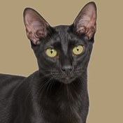
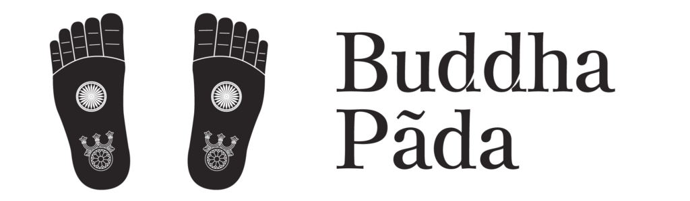

00:00
Dzongsar Jamyang Khyentse Rinpoche

A haiku from Koili
Sitting complete
10minutes
0breaths
0sittings
0minutes in all
May all sentient beings be at peace.
0of 108
How long will you sit?
minutes
Practice
Guide
Breath
Sound
Time of day
The hall follows your local time unless you choose a time of day.
Light & Sound
